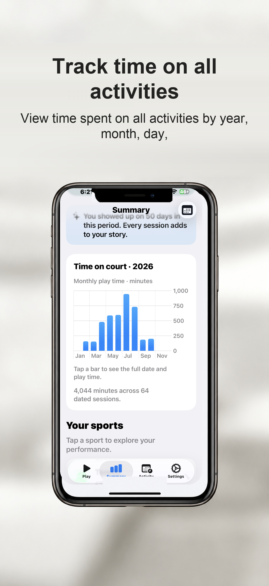
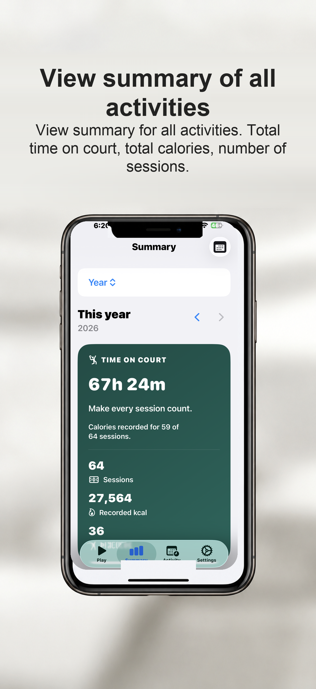
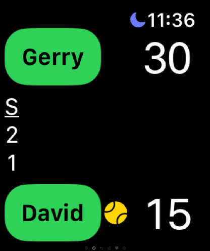
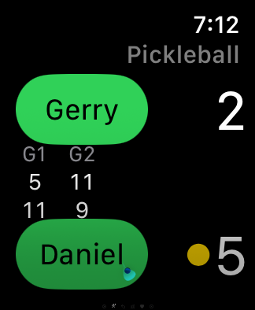
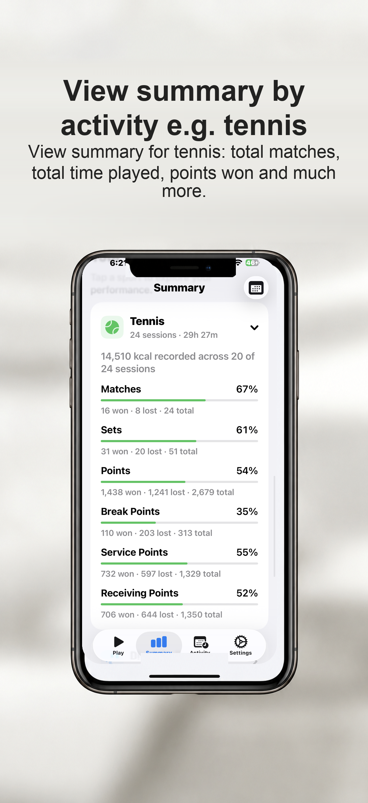
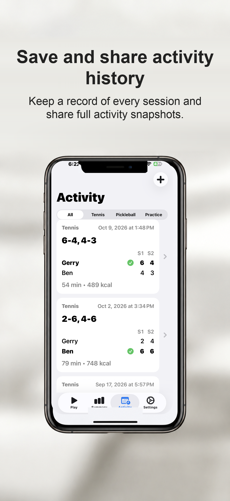
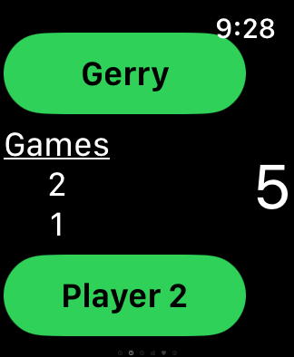

Your play, over time.
See time on court by year, month, or day. Follow the sessions that keep you coming back.

SporTrax · Tennis & pickleball
Score from your Apple Watch. Track your time on court. See the full story of your play on iPhone.
New in 1.10 · Redesigned Summary & Activity

In the moment
Keep score with a glance at your wrist. Follow points, games, and match progress, with quick undo when you need it.

The bigger picture · New in 1.10
Every match and practice is part of your story. Explore time played, session totals, and recorded calories in the redesigned Summary.
See time on court by year, month, or day. Follow the sessions that keep you coming back.

Explore tennis results across matches, sets, points, and serving and receiving stats.


After the final point
Your redesigned Activity view puts the details in focus, from the final score to time spent on court.
More ways to play
Drills, rallies, or a little friendly competition. Track practice alongside your matches, with heart-rate and calorie context when Apple Health permissions are enabled.

Tug of War turns hitting sessions into a no-serve mini game, saved in your activity history.
See you on court
SporTrax for Apple Watch and iPhone.
SporTrax is listed on the App Store as collecting no data from the app.